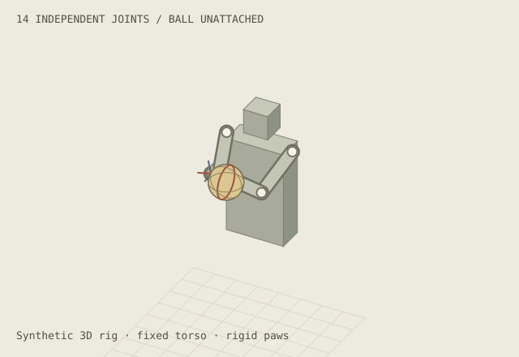
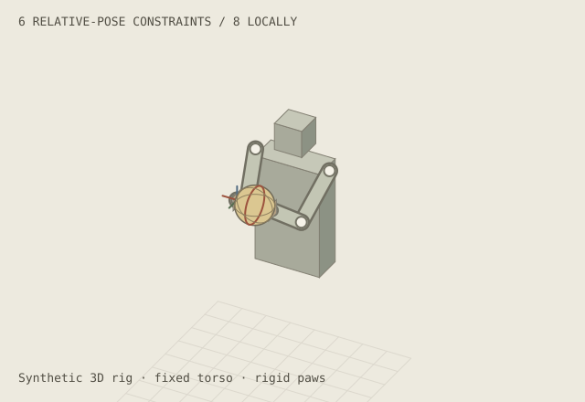
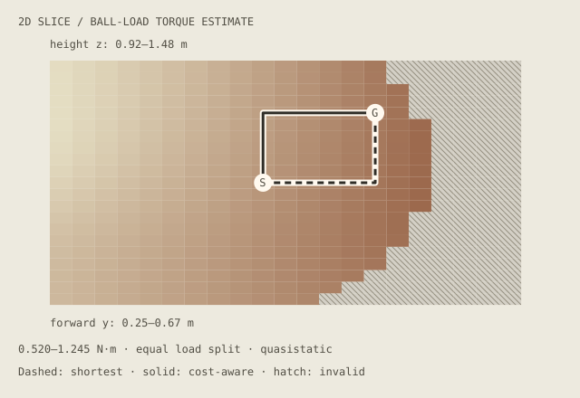
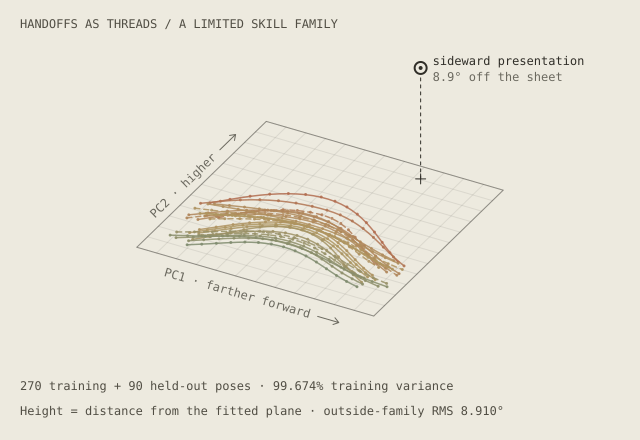

03 / manifolds and motion
How many dimensions does a movement need?
A volleyball, fourteen joints, and the smaller spaces hiding inside complicated machines.
Imagine a humanoid robot holding a volleyball with both hands.
Each arm has seven independently movable joints. The robot can measure their angles, calculate where its hands are, and estimate their positions relative to one another. We can represent both arms as one fourteen-joint machine.
If the robot already knows the geometry of its arms, why is using two hands still difficult? And if it has fourteen degrees of freedom, does it really need all fourteen to do something as ordinary as passing a ball?
These questions lead to a useful idea in machine learning: a system may have an enormous number of possible configurations, while a particular useful behavior occupies a much smaller space.
Interactive teaching illustration · runs in your browser, no live model or physical robot.
Physical +Y means forward from the torso; it appears down-left in this front view. Joint rotations are not forward-distance controls.
00 / fourteen numbers
A pose is a point in a space we can't see.
Every joint angle is a number. Collect all fourteen angles and we have a vector:
q = [q₁, q₂, …, q₁₄]
Imagine a panel with fourteen sliders, each attached to one joint. Every combination describes a complete pose of the robot's two arms. That combination is one point in its fourteen-dimensional configuration space.
Fourteen dimensions does not mean fourteen spatial directions. It means fourteen independent coordinates are needed to specify the pose.
In robotics, forward kinematics takes joint angles and calculates where the hands end up. Inverse kinematics, or IK, works backward: give the robot a desired hand pose and solve for joint angles that achieve it.
Inverse kinematics may have more than one solution. Your elbow can move while your hand stays approximately in place; a robot can have that same redundancy.
Fourteen independent joint angles

Free configuration. Two arms × 7 independent joints = 14 joint coordinates. The ball is unattached.
Left paw (x, y, z): -0.086, 0.464, 1.256 m. Right paw: 0.086, 0.464, 1.256 m. Coloured wrist axes show orientation.
FK (forward kinematics) maps fourteen joint angles to two hand poses. The ball is unattached. IK (inverse kinematics) solves the reverse problem.
Static illustration. Enable JavaScript to explore this panel. All article explanations remain available.
A manifold is a space that looks locally like an ordinary flat coordinate space, even if its global geometry is curved or complicated. The surface of a sphere is a familiar example: it sits in 3D space, but its location can be described with two coordinates.
Our robot's configuration space is harder to visualize, partly because revolute joint angles have a rotational topology and real joints have limits. But the idea is the same: a point is a configuration, and a path through the space is a movement of the robot.
01 / a volleyball changes the rules
What happens when both hands must agree?
Start with just one simple, flat paw pressing against the volleyball, oriented along the surface normal. Its contact point lies on a sphere. That sphere is a two-dimensional manifold embedded in our three-dimensional world.
Some contact positions are unreachable. The robot's arms have finite length, its joints have limits, and its elbows cannot pass through its torso. The set of reachable contact locations is only a subset of the ball's surface.
Importantly, the ball's surface is a space of contact locations, not a complete description of the robot. Many different arm poses can put the paw on the same patch of the ball.
Now give the robot a firm, two-handed grip. Assume both paws are rigidly attached at fixed contact frames on the ball, and let the ball move with them.
The hands can no longer move independently. They must preserve a fixed relative position and orientation. In this idealized example, that introduces six independent constraints: three positional and three rotational.
14 joint dimensions − 6 grasp constraints = 8 remaining dimensions
So the valid poses of our fourteen-joint robot lie on an eight-dimensional constraint manifold, locally and away from singularities.
Six of those remaining degrees of freedom can describe the ball's position and orientation; the other two describe ways the arms can change posture without moving the ball. This is a useful local description, not a promise that the whole space has one simple eight-number coordinate system.
Eight controls, one rigid grasp

Canonical rigid grasp. Numerical relative-pose Jacobian rank 6; 14 joint coordinates minus 6 independent constraints leaves 8 dimensions locally.
Relative-hand residual: 0.000185 mm translation and 0.000073° rotation.
A rigid grasp fixes three relative translation and three relative rotation coordinates. Fourteen minus six gives eight locally, at a regular pose. Targets outside the reachable region are not accepted.
Static illustration. Enable JavaScript to explore this panel. All article explanations remain available.
Notice what happened: we did not train anything. We used known geometry to rule out combinations of joint angles that would break the grasp.
Constraint reduction makes the space smaller. It has not yet told us which movements are useful.
02 / the terrain over the manifold
A valid movement isn't necessarily a good one.
Imagine drawing a height map over the spherical volleyball surface. At each point, height might represent how much torque one shoulder joint needs to maintain a specified contact under a specified load.
Some regions become hills. Others become valleys.
Mathematically, this is a scalar field: one number attached to each point of a space. We can attach fields to the eight-dimensional grasp manifold too.
One field could measure joint effort. Another could measure proximity to joint limits. Another might indicate how close the arms are to colliding.
The robot can then look for a route from its current pose to a goal that stays valid while avoiding expensive or dangerous regions.
A field over a two-dimensional slice
A scalar field assigns one cost to each valid configuration. Hatched cells are unsolved or excluded by the disclosed clearance proxy. They are not valid routes. This sampled slice is not the whole manifold.

Sampled ball-load torque field. Horizontal: forward y, 0.25 to 0.67 m. Vertical: height z, 0.92 to 1.48 m. Fixed x=0.00 m; orientation and posture preferences fixed. Larger physical +Y is rightward on this coordinate chart, but down-left in the robot view. The chart axes are not screen directions for the robot.
331 of 441 samples are valid. Field range 0.520–1.245 N·m; quasistatic, equal load split. Dashed = shortest route (0.273 m); solid = cost-aware route (0.273 m). S = start; G = goal; hatch = invalid sample.
Static illustration. Enable JavaScript to explore this panel. All article explanations remain available.
The landscape doesn't create extra physical dimensions; it describes a quality of the existing configurations. Nor does a steep cost imply that the manifold ends there. A pose might be geometrically possible but require too much force to maintain.
Our simplified map represents a fixed-load, quasistatic calculation. Actual joint torque also depends on velocity, acceleration, contact forces, and how the robot distributes loads between its hands. A fast handoff changes the dynamics.
Geometry tells us where the robot might go. A cost landscape helps it choose how to get there.
03 / a smaller space inside the larger one
What if a skill needs fewer controls than the robot has joints?
Now imagine recording hundreds of successful volleyball handoffs.
The robot starts in slightly different positions. Its recipient stands in slightly different places. Still, many of the movements look similar: extend the ball, turn it into a comfortable presentation, maintain the grasp, and return to a neutral pose.
The robot has eight degrees of freedom available under the grasp constraints. But these practiced handoffs may use a much smaller collection of coordinated movement patterns.
Perhaps a limited family of handoffs can be approximated using two variables:
- Reach: how far the ball moves toward the recipient.
- Present: how the ball is positioned and rotated for the transfer.
The joint angles all change together when those two values change. We can write a compact decoder as:
z ∈ ℝ², q ≈ f(z) ∈ ℝ¹⁴
The two numbers encode a point in a learned or designed action space. The decoder expands it into a full fourteen-joint pose; a constraint solver can correct the result to maintain the rigid grasp.
Two ways to encode a handoff
Reach and Present are designed task coordinates. Principal component analysis (PCA) fits a linear two-coordinate approximation to synthetic demonstrations. A latent action is a compact code decoded into many joints. Projection repairs geometry, not dynamics.

Training-fitted PCA. Each thread is one synthetic handoff plotted on PC1 and PC2; height is its joint-space distance from the fitted plane at the same scale. Solid = training; dashed = held out. 270 synthetic training poses and 90 held-out poses. Two components explain 99.674% of training variance.
Holdout joint-angle RMS: 0.209° before projection and 0.129° after projection (0 failures). Outside-family raw reconstruction RMS: 8.910°. Reach / Present are hand-designed coordinates, not names for these fitted components.
PCA signs are arbitrary. This example chooses +PC1 toward farther-forward training poses and +PC2 toward higher training poses. These remain mixed fitted axes, not Reach / Present or universal meanings.
Static illustration. Enable JavaScript to explore this panel. All article explanations remain available.
There's an important distinction between an intuitive explanation and a measured result. We can name two hand-designed skill controls Reach and Present. But a data-learned pair of coordinates, such as the first two principal components of demonstrated movements, generally will not come labelled with human concepts.
In the experiment, we can examine both: easy-to-understand task controls and a genuine two-coordinate approximation fitted to a small synthetic demonstration dataset. We can also see its reconstruction error and the movements it cannot reproduce.
This is a different type of reduction from the rigid grasp.
The geometry removed invalid configurations. The learned representation captures regularities among useful configurations.
Neither reduction guarantees that every output is physically executable. The decoder may wander away from the exact grasp constraints; a physical controller still has work to do.
04 / compression isn't always distillation
Three operations that sound similar.
Let's separate three ideas that are easy to conflate.
Constraint reduction: fourteen joint variables are restricted by six known grasp constraints, yielding an eight-dimensional valid set locally. This comes from geometry.
Representation learning: recorded handoffs are approximated with a compact code. This discovers statistical structure in a collection of movements. The resulting 2D representation can be useful without spanning every motion the robot is capable of making.
Knowledge distillation: a capable teacher, perhaps a slow planner that evaluates many possible motions, supplies behavior for a smaller student policy to imitate. Distillation transfers a mapping from situations to good actions; the student may or may not use a low-dimensional code.
The same robot can benefit from all three. We can constrain its body using physics, describe practiced skills compactly, and transfer an expensive planner's decisions into a faster controller.
They are complementary ideas, not three names for the same operation.
05 / the world doesn't stay on our drawing
The difficult parts happen when contact changes.
Our robot can calculate its joint positions from sensors and known geometry, but that isn't the same as knowing everything about the world.
A paw might slip. A rubber ball might deform. The person receiving it might move unexpectedly. Two arms can satisfy the geometric grasp while applying far too much force to the ball.
A geometrically valid path also isn't necessarily dynamically feasible. Motor torque limits, friction, momentum, and whole-body balance matter; a walking humanoid adds its legs, torso and ground contacts to the problem.
This suggests a useful division of labor in automation. A vision-language-action (VLA) policy might interpret “hand me the ball”, recognize the recipient, and propose a handoff goal or action. A kinematic solver and lower-level controller can then exploit known geometry and sensor feedback to make the motion consistent and respond to physical disturbances.
Some modern systems predict low-level robot actions directly, and many architectures mix learned and conventional components. The point is not that all VLAs must have one particular design. It's that we shouldn't confuse what can be computed from a mechanical model with what has to be learned about an uncertain world.
Then the recipient grips the ball, and our robot releases a hand.
The constraints change. A pair of rigidly attached paws becomes a one-hand hold, or a freely moving ball. The system leaves one constraint regime and enters another.
Complex manipulation therefore involves both continuous motion within a valid region and discrete changes to the contact constraints themselves.
Deciding when to grip, when to release, and what to do when something slips is another place where a learned policy can be particularly useful.
06 / back to learning machines
High dimensionality doesn't require high-dimensional solutions.
The same intuition shows up elsewhere in machine learning.
A neural network may work with representations containing thousands of numbers, while a particular task depends on variations along only a handful of effective directions. A compact representation can make the patterns easier to learn, reuse or control.
LoRA is a related example with an important qualification. It approximates a model's weight updates with low-rank matrices rather than fine-tuning every weight independently. This doesn't literally discover a robot-like manifold inside the network's activations, but it exploits the possibility that useful adaptation can be expressed with relatively few effective parameters.
Our volleyball robot gave us three different kinds of simplification:
- A constraint manifold derived from geometry.
- A cost landscape that makes some routes preferable to others.
- A compact learned skill space discovered from repeated behavior.
The robot began with fourteen independently movable joints. Under an idealized rigid grasp, it had eight available degrees of freedom. And a particular family of successful handoffs might be approximated with only two coordinated variables.
Those last two variables aren't universal. A handoff skill isn't a juggling skill, and a good compression for one task may fail on another.
That's the central lesson: the dimensions available to a system are not necessarily the dimensions required by a useful behavior.
A capable machine must represent the behavior, preserve the constraints that keep it physically coherent, and remain flexible enough to respond when the world doesn't behave as expected.
The robot doesn't need to rediscover the geometry of a sphere. It needs to learn what to do with the ball.
Sources, assumptions & limits
Sources, assumptions & limits
This is a deterministic teaching illustration, not a deployed VLA, a measured robotics benchmark, a live model, or a dynamically accurate robot simulator. The fourteen-DOF robot has two seven-DOF arms and a fixed torso. The 148 count assumes two rigid, fixed relative hand contact frames, a movable object, six independent relative-pose constraints and a nonsingular local configuration. The 2D skill model is fitted to explicitly synthetic demonstrations; results must report reconstruction error rather than claim general applicability. Force/cost metrics are simplified and specified on the page.
Further reading:
- Kevin M. Lynch and Frank C. Park, Modern Robotics, Configuration Space Representation and Configuration and Velocity Constraints.
- Learning latent actions to control assistive robots — a genuine example of learning lower-dimensional actions from demonstrations.
- Physical Intelligence, π₀: Our First Generalist Robotic Policy — an example of a vision-language-action system, not the implementation used here.
- Hu et al., LoRA: Low-Rank Adaptation of Large Language Models — low-rank weight adaptation, not direct proof of a low-dimensional activation manifold.
Original deterministic mechanics and artwork, MIT licensed. Exact source revision · SHA-256 integrity manifest · Exact mechanics commit · MIT license. Fixed torso; x = lateral, y = forward, z = up. Positions in metres; internal angles in radians, controls in degrees. DOF means an independent degree of freedom.